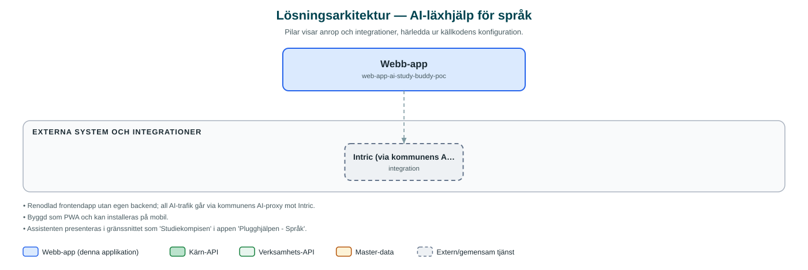

AI-läxhjälp för språk
Testapp där elever kan öva glosor och fraser inför prov med hjälp av en AI-assistent, kallad Plugghjälpen.
Om applikationen
En prototyp som prövar konceptet med en AI-assistent som läxhjälp i språk. Eleven väljer språk (engelska, tyska, spanska eller franska), delar sin läxa med assistenten och kan sedan chatta för att bli förhörd på glosor och fraser eller få förslag på fraser.
Läxan kan skickas in på flera sätt: genom att fotografera den med kameran, ladda upp en fil eller skriva in texten direkt. Assistenten anpassar sedan övningen efter innehållet.
Appen är uttryckligen en proof-of-concept och bygger på kommunens AI-plattform Intric via en egen AI-proxy.
Det här stödjer applikationen
- Språkval – Eleven väljer mellan engelska, tyska, spanska och franska; en egen assistent per språk.
- Dela läxan – Fota läxan med kameran, ladda upp filer eller skriv in glosorna som text.
- Glosförhör i chatt – AI-assistenten förhör på glosor och fraser och ger förslag på fraser utifrån läxan.
- Färdiga frågeexempel – Vanliga frågor som 'Förhör mig på glosor' finns som snabbval.
- Starta om – Möjlighet att börja om från början med en ny session.
Teknisk dokumentation
Nedan beskrivs hur applikationen är uppbyggd, vilka API:er den använder och vad som krävs för att driftsätta den. Informationen är härledd ur källkoden och dess konfiguration på GitHub.
Arkitektur

Applikationen är en webbaserad frontend (React, TypeScript, Vite, sk-web-gui (inkl. AI-komponenter), Tailwind CSS, i18next, PWA (vite-plugin-pwa), react-webcam). Övriga integrationer som förekommer i koden: Intric (via kommunens AI-proxy, web-app-intric-backend).
Teknikstack
- Frontend: React, TypeScript, Vite, sk-web-gui (inkl. AI-komponenter), Tailwind CSS, i18next, PWA (vite-plugin-pwa), react-webcam
API-beroenden
Inga prenumerationer på kommunens API-plattform hittades i källkodens konfiguration.
Konfiguration och driftsättning
- .env med assistent-ID, hash och applikations-ID per språk (VITE_ASSISTANT_*, VITE_HASH_*, VITE_APPLICATION_*)
- VITE_INTRIC_API_BASE_URL som pekar på kommunens AI-proxy
Noterbart ur källkoden
- Renodlad frontendapp utan egen backend; all AI-trafik går via kommunens AI-proxy mot Intric.
- Byggd som PWA och kan installeras på mobil.
- Assistenten presenteras i gränssnittet som 'Studiekompisen' i appen 'Plugghjälpen - Språk'.
Källkod
Källkoden är öppen och finns hos Sundsvalls kommun på GitHub. I källkodsförrådet finns även instruktioner för att klona, konfigurera och starta applikationen i egen miljö.